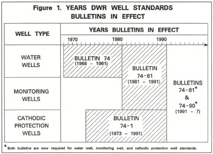

|
Improperly constructed, altered, maintained, or destroyed wells are a potential pathway for introducing poor quality water, pollutants, and contaminants to good-quality groundwater. The potential for groundwater quality degradation increases as the number of wells and borings in the area increases. Improperly constructed, altered, maintained, or destroyed wells can facilitate groundwater quality degradation by allowing:
Permanently inactive or “abandoned” wells that have not been properly destroyed pose a serious threat to water quality. They are frequently forgotten and become dilapidated with time, and thus can become conduits for groundwater quality degradation. In addition, humans and animals can fall into wells left open at the surface. The Department of Water Resources has responsibility for developing standards for wells for the protection of water quality under California Water Code Section 231. Water Code Section 231 was enacted in 1949. Statewide standards for water wells were first formally published in 1968 as DWR Bulletin 74, Water Well Standards: State of California. Standards for cathodic protection wells followed in 1973 as Bulletin 74-1, Cathodic Protection Well Standards: State of California. Bulletins 74 and 74-1 are now out of print. A revised edition of Bulletin 74 was published in 1981 as Bulletin 74-81 Water Well Standards: State of California. Bulletin 74-81 is enclosed in the back cover of this report. The law for establishing and implementing well standards was changed significantly in 1986 by Assembly Bill 3127 and Senate Bill 1817 (now Chapters 1152 and 1373, Status of 1986). Assembly Bill 3127 (Water Code Section 13801) requires that:
Senate Bill 1817 amended the Water Code to specifically include monitoring wells. It was previously assumed that monitoring wells were included in the collective term “well” used in the law. As a first step in carrying out provisions of the amended law, the State Water Resources Control Board contracted with DWR to:
This Bulletin is a supplement to Bulletin 74-81. It was developed to satisfy the Department’s contract with SWRCB, to respond to Department responsibilities under the Water Code, and to keep pace with technical advances during the ten-year period following publication of Bulletin 74-81. An initial draft of this supplement was published in three sections and was sent to interested organizations and individuals for comment during the Fall of 1988. The Department held public hearings in Los Angeles, November 15, 1988 and in Oakland, November 17, 1988 to discuss the draft supplemental standards and receive public comment. Several sets of written comments for the draft supplemental standards were received by DWR. Written and verbal comments on the standards were reviewed and appropriate changes were incorporated into Final Draft Bulletin 74-90, California Well Standards’ Water Wells, Monitoring Wells, Cathodic Protection Wells; Supplement to Bulletin 74-81, January 1990. Final Draft Bulletin 74-90 was published in November 1989 and was sent to interested organizations and individuals for comment. Comments were reviewed and appropriate changes were incorporated into this final bulletin. Additional discussion on the history of DWR well standards is contained in Bulletin 74-81.  DWR Bulletins 74-81 and 74-1 provided the Department’s standards for water wells and cathodic protection wells just prior to this supplement. DWR standards for monitoring wells were generally the same as for water wells prior to this supplement and were included in Bulletin 74-81. The relationship of the various DWR well standards bulletins is illustrated in Figure 1. Revised standards for water wells in this supplement replace only portions of the water well standards contained in Bulletin 74-81. This supplement is to be used together with Bulletin 74-81 for a complete description of DWR Water Well Standards. Monitoring well standards are presently separately in this supplement are in parallel form to the water well standards. Because many physical similarities exist between water wells and monitoring wells, the water well standards are referred to frequently in the monitoring well standards. Water well and monitoring well standards must be considered together for the construction, alteration, maintenance, and destruction of monitoring wells. Cathodic protection well standards in this supplement replace those in Bulletin 74-1. Because of similarities between cathodic protection wells and water wells, water wells standards are referred to frequently in the cathodic protection well standards. Cathodic protection well standards and water well standards must be considered together for the construction, alteration, maintenance, and destruction of cathodic protection wells. Standards in this supplement are presented in three parts:
Selected technical terms used in this supplement are listed and defined in Appendix A. A list of references is contained in Appendix B. Well standards contained in Bulletin 74-81 together with well standards in this supplement (Bulletin 74-90) are recommended minimum statewide standards for the protection of groundwater quality. The standards are not necessarily sufficient for local conditions. Local enforcing agencies may need to adopt more stringent standards for local conditions to ensure groundwater quality protection. In some cases, it may be necessary for a local enforcing agency to substitute alternate measures or standards to provide protection equal to that otherwise afforded by DWR standards. Such cases arise from practicalities in applying standards, and from variations in geologic and hydrologic conditions. Because it is impractical to prepare “site-specific” standards covering every conceivable case, provision has been made for deviation from the standards. Standards in Bulletin 74-81 and this supplement (Bulletin 74-90) do not ensure proper construction or function of any type of well. Proper well design and construction practices require the use of these standards together with accepted industry practices, regulatory requirements, and consideration of site conditions. It is the ultimate responsibility of the well owner and/or the owner’s technical and/or contractor representative(s) to ensure that a well does not constitute a significant pathway for the movement of poor-quality water, pollutants, or contaminants; does not constitute a public nuisance or hazard; and, adequately performs a desired function. The Department accepts no responsibility for improper design, construction, alteration, maintenance, function, or destruction of individual wells. Construction standards presented in this supplement apply to all water wells, monitoring wells, and cathodic protection wells constructed after the date of this supplement. Alteration, maintenance, and destruction standards presented in this supplement apply to all water wells, monitoring wells, cathodic protection wells, and “borings” regardless of their original date of construction. Standards contained in Bulletin 74-81 remain in effect except where modified by this supplement (Bulletin 74-90). |
| Table of Contents Next Section |